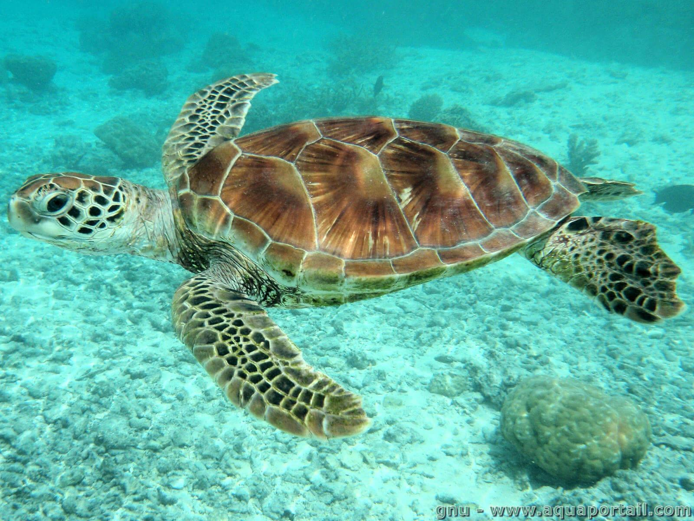

Le ventre de la tortue
Organes
L'organisation des organes des tortues correspond de manière générale à celle des vertébrés. Quelques différences sont néanmoins à souligner : elles n'ont pas d'oreilles externes (les oreilles internes sont situées derrière les yeux), pas de dents (remplacées par un bec) et ont un cloaque10. Le cœur des tortues possède trois cavités (deux oreillettes et un ventricule), il est plutôt plat, large et sa pointe est arrondie10,11. L'appareil respiratoire de la tortue est l'un des plus évolués parmi les reptiles11 : la tortue possède en effet une glotte, un larynx, un pharynx et une trachée (composée d'anneaux cartilagineux)11. Elle possède deux poumons avec de nombreux replis et situés sous la dossière, ce qui explique pourquoi une tortue sur le dos peut mourir d'étouffement11. La tortue n'a pas de diaphragme, la respiration est réalisée grâce aux mouvements de l'ensemble des muscles du corps. Le système digestif est assez classique avec un foie volumineux11. Comme les autres reptiles, les tortues sont recouvertes d'écailles. Les yeux sont protégés par trois paupières.
